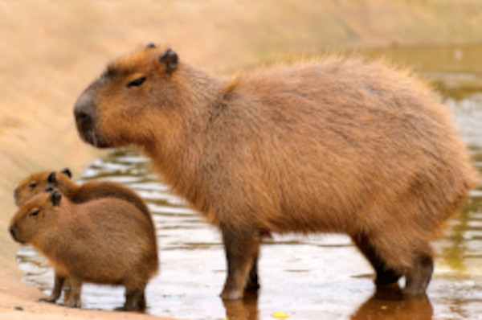

A capivara ou capincho (nome científico: Hydrochoerus hydrochaeris) é uma espécie de mamífero roedor da família Caviidae e subfamília Hydrochoerinae. Alguns autores consideram que deva ser classificada em uma família própria. Está incluída no mesmo grupo de roedores ao qual se classificam as pacas, cutias, os preás e o porquinho-da-índia. Ocorre por toda a América do Sul ao leste dos Andes em habitats associados a rios, lagos e pântanos, do nível do mar até 1 300 m de altitude. Extremamente adaptável, pode ocorrer em ambientes altamente alterados pelo ser humano.
agora uma imagem de uma
DILMAVARA !!!!